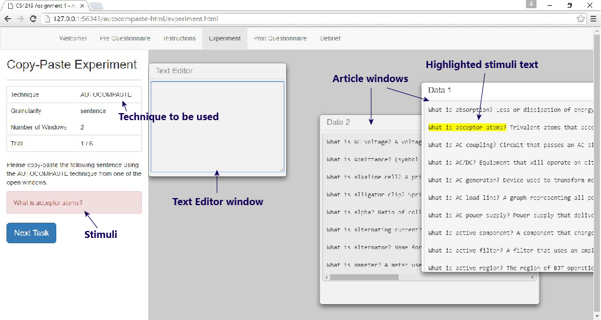

Dear participant , please read the following instructions carefully before the experiment.
The purpose of this experiment is to gather information about the performances of two copy-paste techniques – Ctrl-C Ctrl-V keyboard shortcut and AutoComPaste. In this experiment, you are going to complete a series of copy-paste tasks according to the requirements specified.
The screenshot below illustrates a typical task interface.
The screen is split into two sections, the left section contains the conditions of the experiment while the right section contains the Text Editor window and the Article windows.
The left section defines the Technique to be used, Granularity (sentence, paragraph or phrase), Number of Article Windows and Trial number for the current task.
The words in the red box are called the stimuli, which is the target text that you have to enter into the Text Editor window using one of the two techniques. However, please refrain from typing the required text in manually for a more meaningful result!
The right section consists of two kinds of windows: one Text Editor window and several Article windows. The Text Editor window is where you should paste the stimuli in order to complete the task. The stimuli exists in one of the Article windows and it will be highlighted in yellow for easy identification in the cases of the TRADITIONAL copy-pasting technique. If you do not see the highlighted text at first glance, try scrolling down/right in each Article window.
As mentioned, your task is to copy-paste the stimuli from the Article window into the Text Editor window using one of the two techniques.
To use the traditional Ctrl-C Ctrl-V technique, select the stimuli in the Article window with your mouse and press "Ctrl" key and "C" simultaneously, then place your cursor inside the Text Editor window and press "Ctrl" key and "V" simultaneously.
To use the AutoComPaste technique, ensure your Text Editor window is focused and type three characters or more to see a dropdown list of possible sentences that contain the characters you have just entered. Press the ↑/↓ buttons on the keyboard to scroll through the list of suggestions. Press Enter to select a suggestion and the text editor will display the full selected sentence.
You may then delete unnecessary words in the cases of Phrase tasks, or continue to append more sentences in the cases of Paragraph tasks.
After you are satisfied with the text entered in the Text Editor window, press "Next Task" button in the left section to load the next task. Please note that any leading or trailing spaces in the Text Editor window will not affect the accuracy of your response.
A timer will start immediately when a new task is loaded and end when "Next Task" button is pressed. However, there is no need to rush through the tasks and compromise accuracy for speed.
Now you have learned more about how the interface works and the two copy-paste techniques, it will be useful to have several untimed trials to familiarise yourself with the tasks. The actual experiment will take place after you complete the trials.